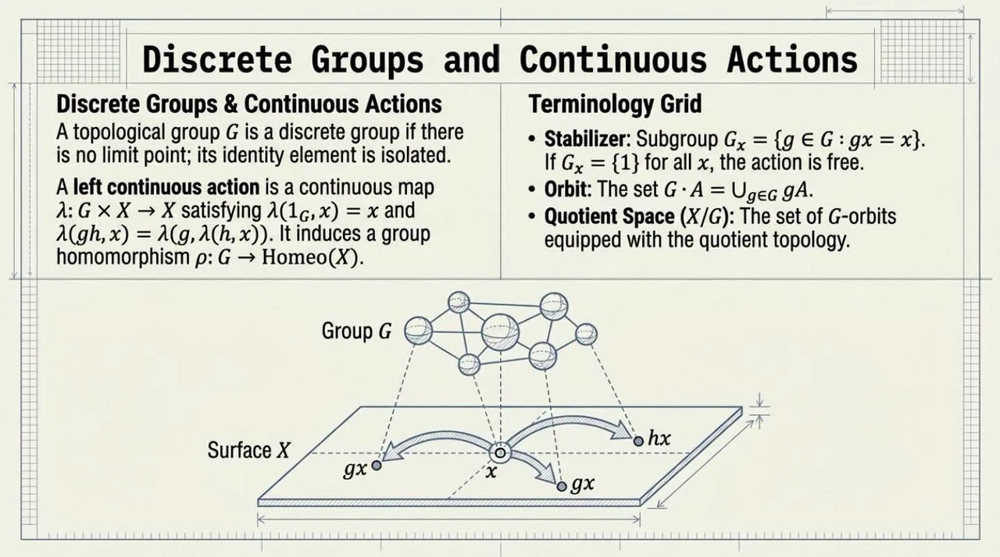

기둥 3 · 움직임 · 14장
군 — 되돌릴 수 있는 움직임과 2 × 2 행렬
도장 찍기 역할극, 그리고 행렬 곱셈 첫 만남
도장 찍기 역할극, 그리고 행렬 곱셈 첫 만남
핵심 질문 — 되돌릴 수 있는 움직임들을 모으면 어떤 규칙이 생기고, 그 움직임을 숫자 표(행렬)로 어떻게 적을까?
지금까지는 공간 하나를 들여다봤어요. 기둥 3에서는 공간을 「움직이는」 무리를 봐요. 되돌릴 수 있는 움직임의 모음이 군이고, 군이 공간의 점을 옮기는 것이 작용이에요. 평면의 돌리기·뒤집기는 2 × 2 행렬로 적을 수 있어서, 오늘 처음으로 행렬 곱셈을 해 봐요.
숫자 요약은 이 장의 예시 계산에서 나온 값입니다(실제 데이터가 아닌 설명용 값).
오늘은 역할극이에요. 여러분 한 사람 한 사람이 「도장」이 됩니다.
저는 90° 돌리기 도장 할래요!
행렬 곱셈이요? …천천히 부탁드려요.
행렬·벡터, 복잡한 공식을 몰라도 됩니다. 그림을 움직여 보고, 밑줄 친 말을 누르면 뜻이 나옵니다.
시아군, 작용, 행렬 곱셈…
모아곱해서 더하기를 왜 두 번…?
이론 시간. 시아와 모아가 머리를 감싸 쥐었다.
하루사진 앱 「90° 회전」 버튼 눌러 봤지?
그때 하루가 박사 몰래 살금살금 다가왔다.
하루버튼을 누르면 사진이 90° 돌고, 네 번 누르면 제자리야. 이렇게 「되돌릴 수 있는 움직임들의 세트」가 군이야. 그리고 그 버튼은 숫자 네 개짜리 표(행렬) 하나로 모든 픽셀을 똑같이 옮겨 줘!
하루의 비밀 설명 시간.
시아회전 버튼이 군이었어!
모아행렬은 점 옮기는 계산기구나!
박사는 멀리서 못 본 척 웃었다.
군 = 되돌릴 수 있는 움직임 세트. 행렬 = 그 움직임을 숫자로 적은 계산기.
사진을 90°씩 돌리는 버튼을 떠올려 보세요. 두 번 누르면 180°, 네 번이면 제자리, 거꾸로 돌리면 되돌릴 수 있어요. 이런 움직임 세트가 군이에요.
평면의 돌리기·뒤집기는 숫자 네 개짜리 표(2 × 2 행렬)로 적을 수 있어요. 점의 좌표에 「곱해서 더하기」를 하면 새 자리가 나와요.
이 페이지 사용법: 밑줄 친 말을 누르면 뜻이 나옵니다(Esc로 닫기). 단계마다 그림을 직접 움직여 보고, 끝의 확인 퀴즈로 점검하세요. 앞 장: 13 칼림스키 직선과 평면 — 홀수는 열리고 짝수는 닫힌다
수강생 여섯이 각자 「도장」(움직임 하나)이 되어 칠판 위 점을 옮겨요. 박사가 「두 도장을 차례로 찍으면?」을 묻고, 조교가 행렬로 계산해 확인합니다.
하루가 90°, 그다음 X1이 90°를 찍으면 모두 몇 도 돌았나요?
180°요! 그건 모아 도장이랑 같아요.
두 도장을 찍은 결과도 세트 안에 있지? 그게 군의 첫 번째 규칙이야.
17~20장의 모든 내용이 「군 G가 공간 X에 작용한다」로 시작해요.
원자료는 「단위원(아무것도 안 하기)이 고립된 군」을 이산군이라 불러요. 이산 위상이 군에도 쓰여요.
05·11장의 0/1 표에 이어, 오늘은 행렬이 「점을 옮기는 계산기」라는 걸 처음 봐요.
행렬 곱셈은 「곱해서 더하기」 두 번이 전부예요. 그림 실험이 계산을 한 줄씩 보여 줘요.
상황 질문 — 정사각형 타일을 바닥에 다시 끼우려면 몇 도씩 돌릴 수 있을까요? 돌린 것을 또 돌리면 어떻게 될까요?
「λ(gh, x) = λ(g, λ(h, x))」는 무슨 뜻이에요? 기호가 너무 많아요.
학교 수학으로 보면: 중학교 「함수의 합성」과 같은 생각이에요. 먼저 h를 찍고, 그 결과에 g를 찍은 것 = 「g 다음 h」를 한 번에 찍은 것.
| 식 조각 | 읽는 법 | 뜻 |
|---|---|---|
| λ(g, x) | 람다 지 엑스 | 도장 g를 점 x에 찍은 자리 (g·x로도 씀) |
| λ(1_G, x) = x | 빈 도장은 그대로 | 아무것도 안 하면 제자리 |
| λ(gh, x) = λ(g, λ(h, x)) | 이어 찍기 규칙 | h 먼저, 그다음 g = gh 한 번 |
h = 90° 돌리기, g = 180° 돌리기
h를 먼저 찍으면 꼭짓점 A가 B 자리로, 그다음 g로 D 자리로
gh = 270° 돌리기를 한 번에 찍어도 A가 D 자리로 → 같음
되돌리기: 90° 도장의 지우개는 270° 도장 (90 + 270 = 360 = 제자리)
기호가 많아 보였는데, 「차례로 찍은 것 = 한 번에 찍은 것」이 전부네요.
정사각형 타일은 0°, 90°, 180°, 270°로 돌려 다시 끼울 수 있어요. 두 번 돌린 것도 이 넷 중 하나이고, 돌린 것은 반대로 돌려 되돌릴 수 있어요.
군 G의 원소 g가 공간 X의 점 x를 g·x로 옮기는 것이 작용이에요(원자료의 왼쪽 연속 작용 λ). 작용은 「g마다 X를 X로 옮기는 되돌릴 수 있는 연속 지도」를 주어서, 군에서 Homeo(X)로 가는 대응 ρ가 생겨요.
정사각형 위 점을 고르고 도장을 차례로 찍어 보세요.
90°를 네 번 찍었더니… 제자리예요!
그래서 90° 도장을 4번 찍은 것 = 빈 도장이야.
원자료 「Discrete Groups and Continuous Actions」 왼쪽 상자의 작용 정의 λ: G × X → X.

상황 질문 — 사진 편집 앱의 「90° 회전」 버튼은 픽셀 하나하나를 어떻게 옮길까요?
을 (2, 1)에 곱한다는 게 정확히 어떻게 해요?
학교 수학으로 보면: 중학교 「일차식의 값 구하기」 두 번이에요. 새 x = (첫 줄 첫 수) × x + (첫 줄 둘째 수) × y, 새 y = (둘째 줄 첫 수) × x + (둘째 줄 둘째 수) × y.
| 식 조각 | 읽는 법 | 뜻 |
|---|---|---|
| A = | 이 곱하기 이 행렬 | 움직임 하나를 적은 숫자 표 |
| A·(x, y) = (ax + by, cx + dy) | 행렬 곱하기 벡터 | 새 자리 계산 |
| det A = ad − bc | 행렬식 | 넓이가 몇 배가 되나. 0이면 되돌릴 수 없음 |
90° 돌리기 A = , 점 P = (2, 1)
새 x = 0 × 2 + (−1) × 1 = −1, 새 y = 1 × 2 + 0 × 1 = 2 → (−1, 2)
한 번 더: (0 × (−1) + (−1) × 2, 1 × (−1) + 0 × 2) = (−2, −1)
행렬식 = 0 × 0 − (−1) × 1 = 1 → 넓이 그대로, 되돌릴 수 있음
곱해서 더하기를 줄마다 한 번씩! 계산은 단순한데 점이 정확히 90° 돌아가요.
행렬의 가로줄 하나와 벡터를 자리끼리 곱해서 더하면 새 벡터의 숫자 하나가 나와요. 가로줄이 2개라 숫자가 2개 나와요.
두 움직임을 이어 하면 행렬 두 개를 곱한 새 행렬 하나가 돼요. 90° 행렬을 네 번 곱하면 — 11장에서 본 단위행렬, 곧 「아무것도 안 하기」예요.
· (3, 4) = (2 × 3 + 0 × 4, 0 × 3 + 1 × 4) = (6, 4) — 가로만 2배
· (3, 4) = (−3, 4) — 좌우 뒤집기
행렬 × 행렬도 같은 방법이에요. 왼쪽 행렬의 가로줄과 오른쪽 행렬의 세로줄을 「곱해서 더하기」를 네 번 해요: · → 첫 줄 (0 × 0 + (−1) × 1, 0 × (−1) + (−1) × 0) = (−1, 0), 둘째 줄 (1 × 0 + 0 × 1, 1 × (−1) + 0 × 0) = (0, −1) → = 180° 돌리기. 90° 두 번 = 180°!
표기 안내: 본문에서는 행렬을 두 줄짜리 괄호로 그려요. 퀴즈와 그림 실험처럼 자리가 좁은 곳에서는 같은 행렬을 한 줄로 0, −1],[1, 0처럼 적기도 해요. 앞 괄호가 첫 줄(0, −1), 뒤 괄호가 둘째 줄(1, 0)이에요.
회전 버튼은 숫자 네 개짜리 표 하나로 사진 속 모든 픽셀을 같은 규칙으로 옮겨요.
평면의 돌리기·뒤집기는 2 × 2 행렬 A로, 점 옮기기는 행렬 × 벡터로 적어요. 행렬식이 0이 아니면 되돌릴 수 있어서 군의 원소가 될 수 있어요.
「90° 돌리기」를 고르고 점 P를 (2, 1)에 두세요. 계산 줄을 따라 읽어 보세요.
−1, 2! 제가 손으로 한 거랑 같아요!
「가로 2배 · 세로 절반」도 눌러 봐. 행렬식이 1인데 모양은 찌그러져.
원자료 「It induces a group homomorphism ρ: G → Homeo(X)」 — 군의 원소마다 공간의 움직임 하나가 대응.
X1이 AI에게 「90° 회전 행렬 을 점 (2, 1)에 곱하면?」이라고 물었어요.
답이 그럴듯한지 그림으로 확인하세요. (2, 1)을 90° 돌리면 왼쪽 위로 가야 하는데 (0, −1)은 아래쪽이에요. 숫자 검산과 그림 검산을 함께!
을 (2, 1)에 네 번 곱한 자리를 두고 맞붙었어요.
「360° 돈 거니까 제자리 (2, 1).」
「곱할 때마다 커지니까 4배, (8, 4)!」
누가 맞을지 먼저 예상해 보고 단추를 누르세요. 판정은 계산 결과로만 합니다.
개념정리 흐름: 군과 작용 → 행렬로 적은 작용
| 개념 | 한 줄 뜻 | 일상 비유 | 비유의 한계 |
|---|---|---|---|
| 군 | 빈 도장·이어 찍기·지우개가 있는 움직임 모음 | 도장 세트 | 순서를 바꾸면 결과가 달라질 수 있어요 |
| 작용 | 군의 원소로 공간의 점 옮기기 | 도장 찍기 | 연속 지도여야 해요 |
| 행렬 × 벡터 | 줄마다 곱해서 더하기 | 회전 버튼 | 원점 고정 움직임만 |
| 행렬식 | ad − bc, 넓이 배율 | 넓이 몇 배 | 0이면 되돌릴 수 없음 |
역할극 끝! 계산배틀은 초파리 승. 회전은 크기를 바꾸지 않아요.
행렬 곱셈, 곱해서 더하기 두 번! 이제 할 수 있어요.
90° 도장 네 번이면 원래대로!
다음 장 예고: 15장은 조별 과제예요. 한 점이 도장으로 갈 수 있는 자리(궤도), 제자리 도장(안정자), 궤도를 한 점으로 접은 공간(몫공간)을 만들어 봐요.